Reverse-engineering a 20-year-old healthcare product into a tokenized, automated design system — and a Figma-to-code pipeline that kept eight frontend teams in sync without a single manual handoff.
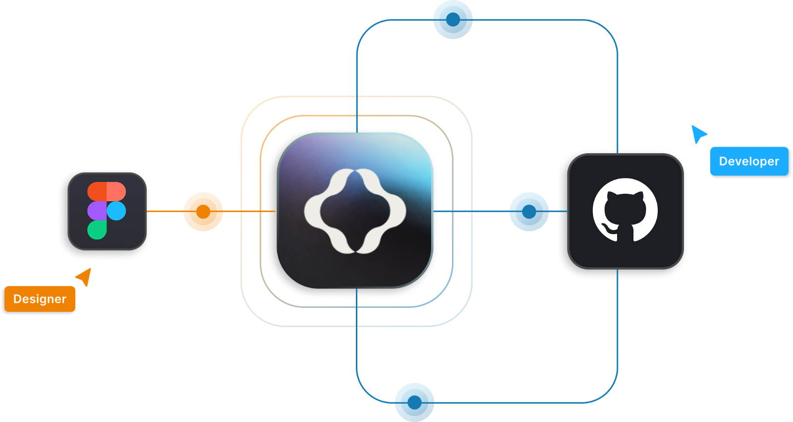
I joined a product built on a 20-year-old legacy system with no design foundation at all — no source files, no UI kit, no design system. The only reference was the compiled code running in production.
The audit revealed inconsistent colors and spacing throughout, duplicated components serving the same purpose in different ways, documentation that no longer matched production, and UI patterns that varied screen to screen without logic. The product had grown for two decades without design governance, and it showed.
At the same time, the frontend team was rebuilding the entire system on MUI with micro-frontends — eight parallel streams that needed a design foundation before they could start. One constraint shaped everything: preserve the existing look and feel. This wasn't a redesign. It was standardizing what already existed without breaking the continuity users relied on.
The first decision I pushed for was to audit before building. I led a comprehensive UI inventory of the production system — cataloguing every inconsistency, duplicated element, and color and spacing value in use, then scrutinizing the remaining documentation against the live environment.
The audit also surfaced accessibility gaps — insufficient contrast, inconsistent keyboard navigation, missing alt text. I flagged and addressed these during structuring, aligning to WCAG throughout. The inventory wasn't just documentation; it became the foundation for every token, scoping, and prioritization decision that followed.
To build something that could scale across this product and future ones, I defined a three-tier token structure — informed by open-source design systems and adapted to work for both design and frontend.
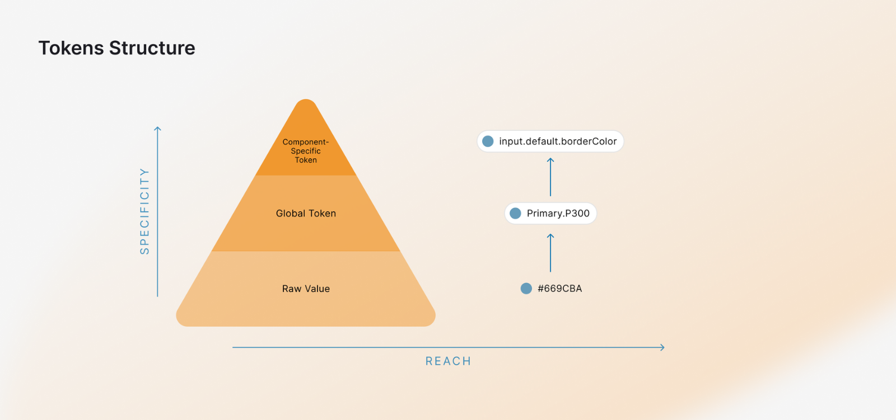
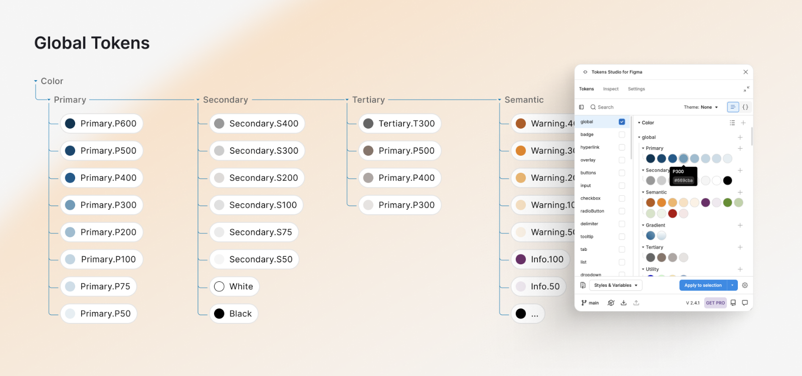
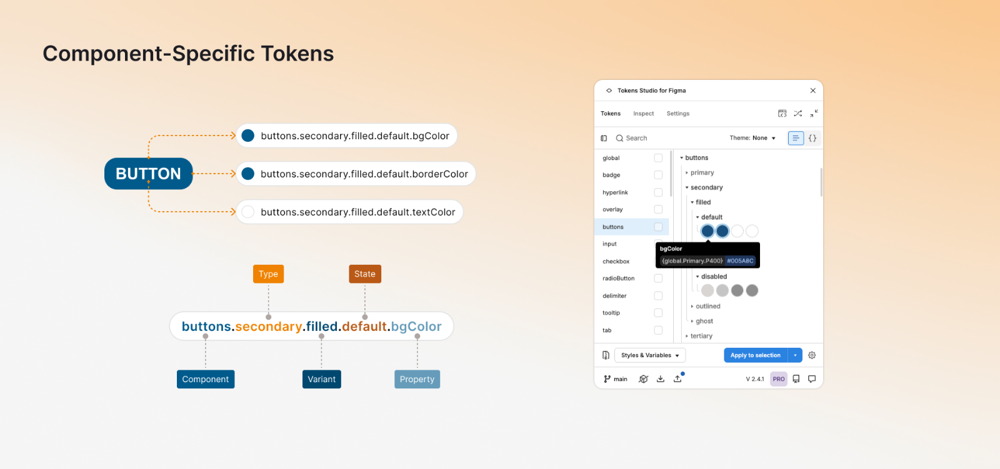
I structured component creation around atomic design — atoms, molecules, organisms — to create a clear, reusable hierarchy and a shared vocabulary between design and frontend.
For every component I mapped the full anatomy before any build began: the properties, variants, and states needed to make it genuinely flexible without creating maintenance debt. Most were built as auto layouts so frontend could implement them accurately, with accessibility — contrast and keyboard support — handled at the component level.
This level of collaboration meant no interpretation gap. When a developer opened a component in Storybook, the structure, naming, and logic matched Figma exactly — the documentation was a shared contract, not an afterthought.
The most technically complex part was building an automated pipeline between Figma, GitHub, and Storybook with the frontend lead — a setup neither of us had done before. Token Studio for Figma was the starting point: tokens defined in Figma could be pushed straight into code.
From there, GitHub Actions transformed token exports into the syntax our frontend could consume. Every token change was treated like a code change — branched, reviewed via PR, approved, merged — giving the pipeline version control and traceability. Stabilizing the pull-push logic across eight active streams took real iteration, but when it worked, any token update in Figma propagated automatically through to the codebase and Storybook.
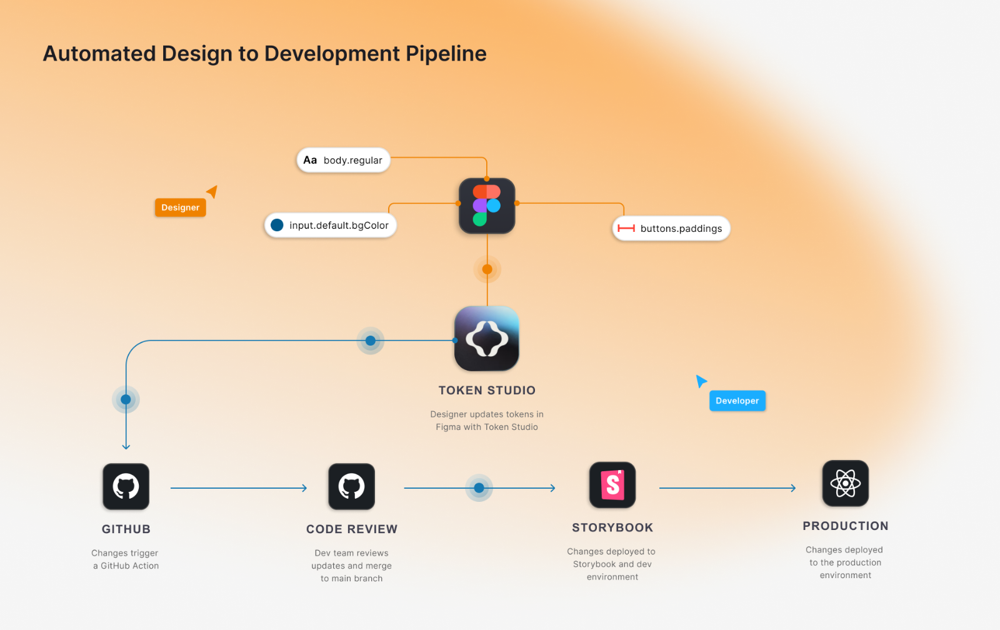
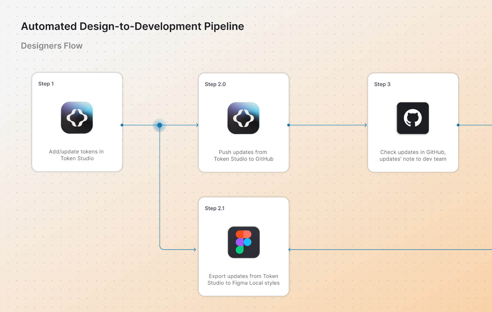
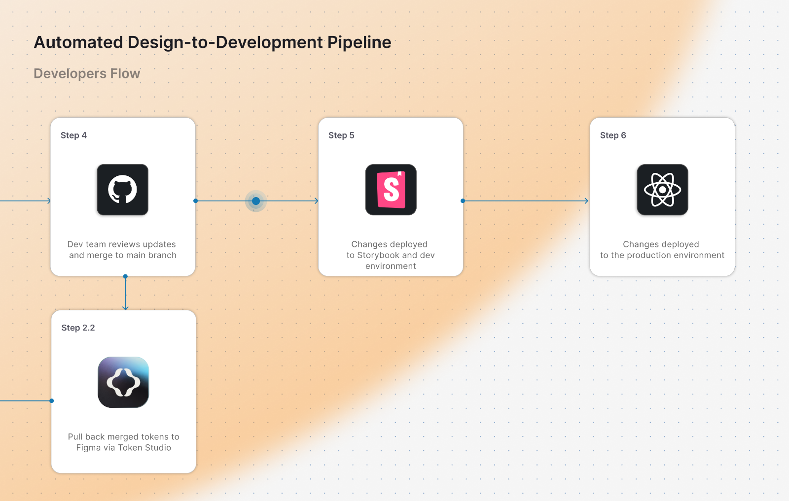
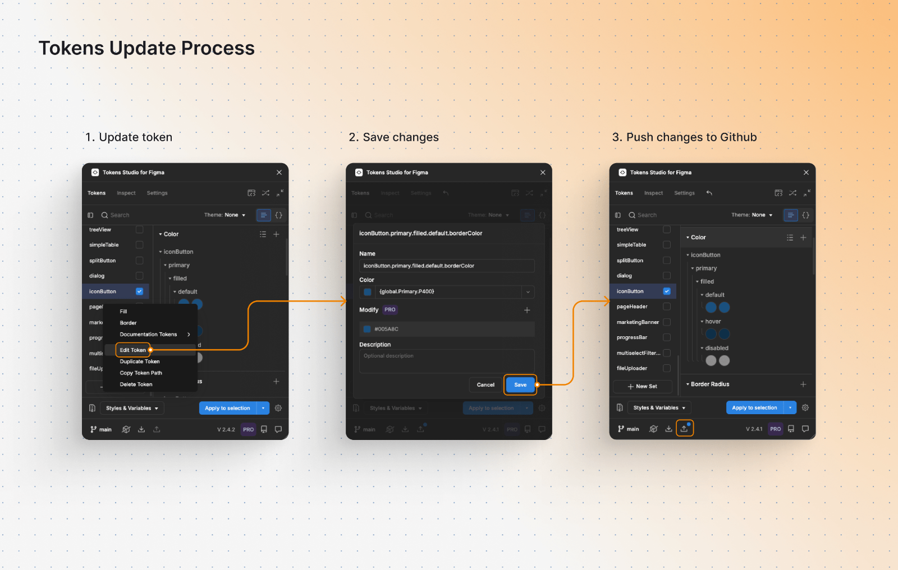
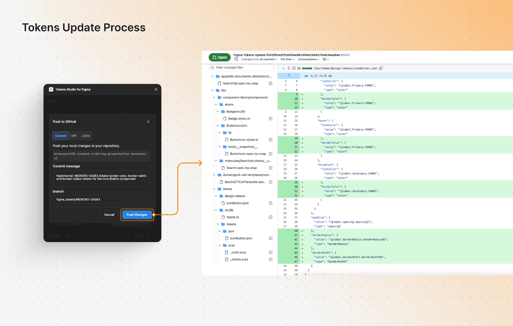
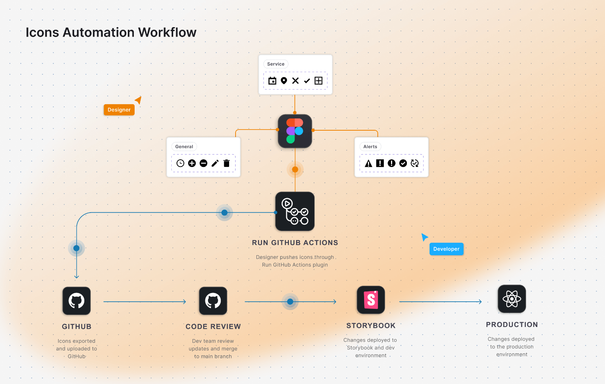
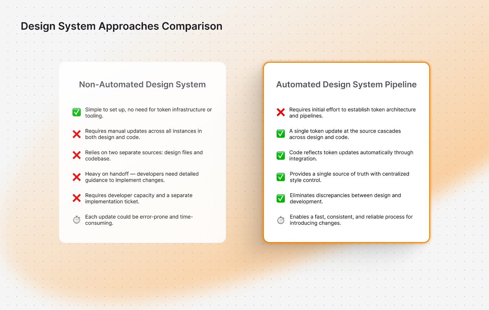
To support eight teams in parallel, I established a page-level auto layout approach for screen creation — letting the team deliver 200+ screens efficiently, with positioning, sizing, and spacing driven by predefined rules. It also made frontend implementation more accurate, reducing rework during handoff.
"The best design-to-dev handoffs aren't handoffs at all. When design and code share the same source of truth, the conversation shifts from 'here's the spec' to 'here's the system — let's build it together.'"